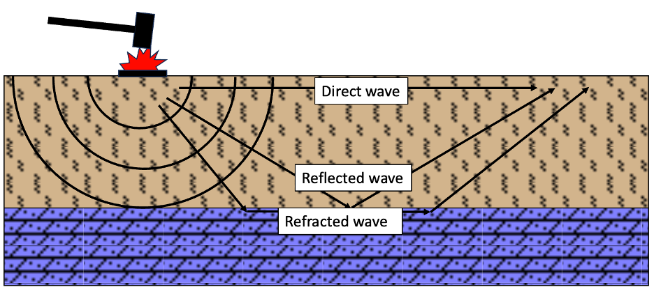
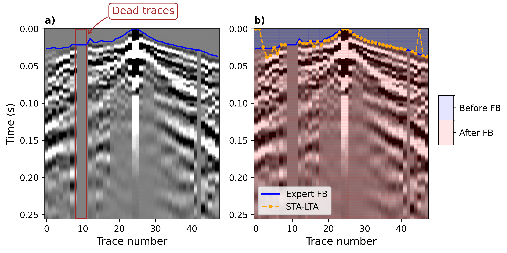
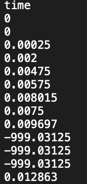
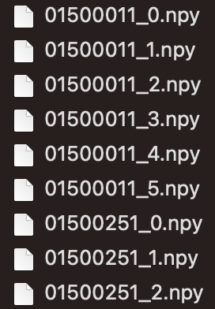
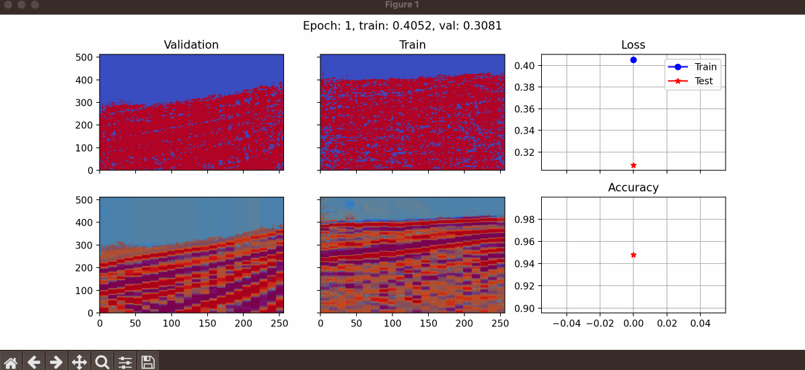
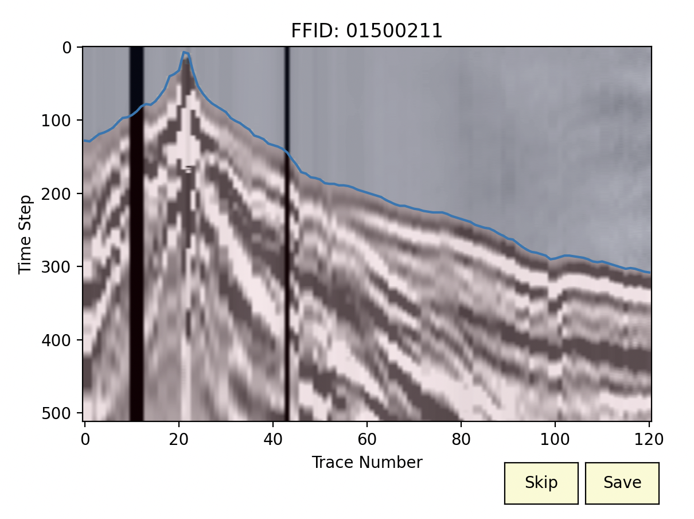

First-Break Picking Using Deep Learning
1. Introduction
This repository is used to implement first-break (FB) picking task using deep learning. For this purpose, we use a U-net to segment the data as before and after first arrivals.
In a seismic shot record, the first arrival is usually the direct wave from the source followed by refractions (Figure 1). The travel time of a seismic wave from a source to a geophone is called first break. First breaks are invaluable sources of information in near-surface studies. We can employ first breaks to obtain a velocity model of the near-surface. In addition to the importance of first breaks for refraction inversion and understanding the characteristics of the near-surface, they can be employed to perform a successful reflection seismic processing and multi-channel analysis of surface waves (MASW).

2. Installation
To install this package, you need to first clone the code
pip install git+https://github.com/geo-stack/first_break_picking.git
3. First-Break Picking
We solve the first-break picking as a segmentation problem. It means that we have two segments,
before FB,
after FB.
In this way, FB can be picked as the interface between two segments. 
In the next sections, we see how to prepare the dataset and the processing steps that can be done to improve the accuracy of the results.
3.1 Initial data files
To use this package, a user needs to prepare the dataset appropriately.
In one folder, we need to have the seismic data and corresponding FB (for training) in .npy and .txt format.
An example of the first-break file can be seen in the following figure.

3.2 Data preprocessing
After preparing the initial data files in .npy and .txt formats, we can perform some preprocessing steps using save_shots_fb. To explain the arguments of this function, let’s look at the following figure.
We have a great data imbalance which leads to a decrease in accuracy. To deal with this problem, we crop the data (a) to generate data presented in (b). For this purpose,
save_shots_fbgets an argument calledtime_windowwhich gets a list with two integer values showing the beginning and the end of the cropping window (in terms of sample and NOT time). Basically, the first element of this list should be0. For example, I usetime_window = [0, 512].In the next step, we scale the data to increase the accuracy and ease of learning. This step leads to the image (c). To do so, user can use two arguments,
scaleandgrayscale, which are boolean and should be set toTrue.For data augmentation, we divide each seismic shot into some subimages with a specific overlap (e and d). For this purpose,
save_shots_fbgetssplit_ntto specify the number of columns in each subimage andoverlapwhich defines the overlap of subimages in terms of percentage, between0.0to1.0. I usually useoverlap = 0.15. For shots with 48 traces, I usesplit_nt = 22, but in the case of shots with more traces, we can use a larger value forsplit_nt.It is really important to provide
save_shots_fbwith the correct value for the sampling rate asdt.This function also gets two other arguments to specify the extension of shot and first-break files as
shot_extandfb_ext. This can be used to develop the code easily in case we want to load.segyor.jsonfiles.save_shots_fbsaves the processed data atdir_to_save.
So, here is how to call this function,
from first_break_picking.data import save_shots_fb
data_info = save_shots_fb(
dataset_dir=path_to_load,
dir_to_save=path_save,
split_nt= split_nt,
overlap = overlap,
time_window=[0, n_time_sampels],
fbt_file_header=fbt_file_header,
fbt_time_column=0,
scale=True,
grayscale=True,
dt=dt_project,
shot_ext=".npy",
fb_ext=".txt" if phase=="train" else None
)
data_info.to_csv(f"{path_save}_data_info.txt", index=False)
The function save_shots_fb returns a Pandas DataFrame which should be saved for using during the prediction.
Here is an example of saved data for a project.

3.3 Training for FB picking
To train a network, we use the function train. This function gets some arguments that are presented here.
train_data_path: Path of the training dataset (can be a list of different datasets).upsampled_size_row: We upsample the data samples before sending them into the model. This variable is used to define the number of rows in upsampled size (must be dividable by 16).upsampled_size_col: This variable is used to define the number of columns in upsampled size (must be dividable by 16).batch_size: Number of data samples that are taken into account together to calculate the loss.val_percentage: A value between 0 to 1 to specify the percentage of data that is used to test the generalizability of the algorithm.epochs: Number of iterations.learning_rate: This is used to define the learning rate.path_to_save: Path to a folder to save the checkpoints and loss values.checkpoint_path: In case a user wants to start training a pretrained network, the path of the checkpoint should be specified here.step_size_milestone: Is used to define a learning rate scheduler. If you want to halve the learning rate at a specific number of epochs, this argument should be used.show: This is a boolean and can be used to specify if the user likes to see the learning procedure. If set toTrue, a figure would be presented like the following example. 
Here is an example of calling this function,
from first_break_picking import train
from first_break_picking.tools import seed_everything
seed_everything(10)
train_data_path = [
"path/to/train/dataset_0",
"path/to/train/dataset_n",
]
train(train_data_path,
upsampled_size_row=n_time_sampels,
upsampled_size_col=upsampled_size_col,
batch_size=batch_size,
val_percentage=val_percentage,
epochs=num_epcohs,
learning_rate=1e-4,
device="mps",
path_to_save="path/to/save/results/checkpoints",
save_frequency=num_epcohs,
loss_fn_name=loss_fn,
model_name=model_name,
checkpoint_path=None,
features=[16, 32, 64, 128],
in_channels=1,
out_channels=2,
encoder_weight="imagenet",
step_size_milestone=15,
show=True
)
3.4 Predicting the first break of one seismic shot
If you want to predict the first breaks in numerous shots, you should create the dataset as described here.
However, if you need to predict the first break on only one shot (or all shots in a loop without saving dataset), the class Predictor should be used.
This object can be created as,
from first_break_picking import Predictor
predictor = Predictor(
path_to_save="path/to/save/results/checkpoints",
checkpoint_path=checkpoint,
split_nt=split_nt,
overlap=overlap,
upsampled_size_row=n_time_sampels,
upsampled_size_col=upsampled_size_col,
dt = dt,
smoothing_threshold=smoothing_threshold,
model_name="unet_resnet"
)
path_to_save: Path to a folder to save the result (will be overwritten).checkpoint_path: Path of the checkpoint that is saved after training.split_ntNumber of columns in each subimage.overlap: Overlap of subimages of one shot.upsampled_size_row: Number of rows in upsampled image.upsampled_size_col: Number of columns in upsampled image.dt: Temporal sampling rate.smoothing_threshold: An integer used to avoid the generated artifacts above the true FB.
By creating this object, we can now give the path of one seismic shot (as presented in Figure 2a) to the method predict and get the first break.
predictor.predict(
path_data=path_data
)

Acknowledgment:
This work, developed by Amir Mardan, was supported by Mitacs through the Mitacs Elevate Program.